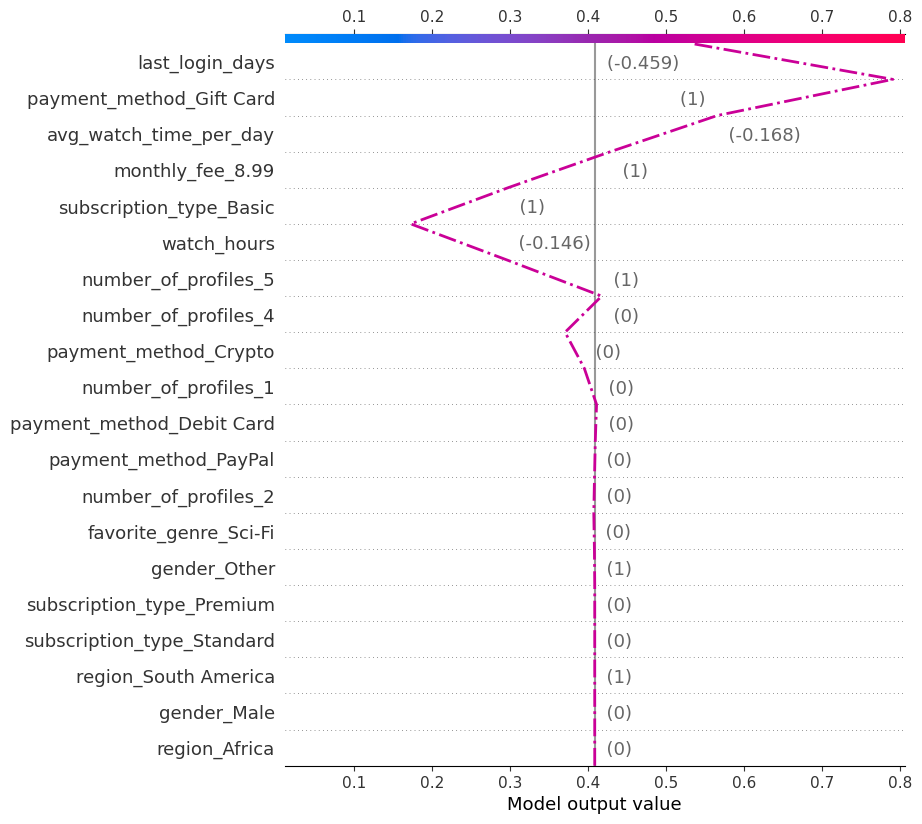

# Import libraries
import pandas as pd
import numpy as np
import matplotlib.pyplot as plt
from sklearn.model_selection import train_test_split
import os
# Import mlflow and shap
import mlflow
import shapThis is Part 4 of 4 in a project to build an explainable machine learning model to predict Netflix customer churn.
- Part 1: Motivation
- Part 2: Data Understanding & EDA Insights
- Part 3: Modeling Strategy & Experiments
- Part 4: Model Interpretation & Insights
Overview
In this section, we take the best model from our model exprimentation and derive meaningful interpretation of it through the use of SHAP (SHapley Additive exPlanations) from the shap library, an approach that uses game theory to explain feature contributions to a model’s prediction locally and globally.
Imports
Test data preperation
We will expediently load the same data from our model experiment section, using the test data once more for predictions and model intepretation.
# Load the data
project_path = os.getcwd()
df = pd.read_csv(project_path + "/Data/netflix_customer_churn.csv")
# Create column name lists for reference
numerical_features = ['age', 'watch_hours', 'last_login_days', 'avg_watch_time_per_day']
categorical_features = ['gender', 'subscription_type', 'region', 'device', 'payment_method', 'favorite_genre', 'monthly_fee', 'number_of_profiles']
target = ['churned']
# Make all categoricals of string data type
for category in categorical_features:
df[category] = df[category].astype("string")
# Make all numerical of float data type (be wary of precision loss for large integers)
for numerical in numerical_features:
df[numerical] = df[numerical].astype("float")
# Drop target and non-feature
X = df.drop(["customer_id", "churned"], axis=1)
# Split into 80% training and 20% testing
X_train, X_test = train_test_split(X, test_size=0.2, random_state=42)
X_train.shape, X_test.shape((4000, 12), (1000, 12))Load the best model
Since we already have our chosen trained and serialized model, we load from our previous experiment run. If we had decided this was the model to deploy, we would register this model with versioning and access the model differently.
# Connect MLflow session to local server
mlflow.set_tracking_uri("http://127.0.0.1:5000")# Use the model_id from best model via mlflow ui
model_id = "m-f7686021a61e45dabd92cae285b65d97"
# Load the model using the appropriate flavor-specific load method
loaded_model = mlflow.sklearn.load_model(f"models:/{model_id}")SHAP setup
Based on game theory, SHAP (SHapley Additive exPlanations) values help show how each feature affects a model’s final prediction, the significance of each feature compared to others, and the model’s reliance on the interaction between features. Positive values indicate positive impact to the prediction and negative values indicate negative impact. The magnitude indicates the strength of the effect.
Most importantly, SHAP values provide useful properties best summarized by the following excerpt from DataCamp:
Additivity: SHAP values are additive, which means that the contribution of each feature to the final prediction can be computed independently and then summed up. This property allows for efficient computation of SHAP values, even for high-dimensional datasets.
Local accuracy: SHAP values add up to the difference between the expected model output and the actual output for a given input. This means that SHAP values provide an accurate and local interpretation of the model’s prediction for a given input.
Missingness: SHAP values are zero for missing or irrelevant features for a prediction. This makes SHAP values robust to missing data and ensures that irrelevant features do not distort the interpretation.
Consistency: SHAP values do not change when the model changes unless the contribution of a feature changes. This means that SHAP values provide a consistent interpretation of the model’s behavior, even when the model architecture or parameters change.
Additional background and paper details can be found on GitHub.
Create explainer
Typically we can directly pass a model to shap.Explainer. However our saved model is defined within a preprocessing pipeline, meaning we need to take three a step approach: 1) extract the pipeline, 2) extract the classification model, and 3) transform the data independently using the extracted pipeline and provide this along with the extracted model to shap.Explainer.
We use shap.TreeExplainer below (since we know we are providing a tree-based model).
# Extract from our model pipeline
extracted_preproc = loaded_model['preprocessor']
extracted_model = loaded_model['classifier']
# Preprocess observations
sample = extracted_preproc.transform(X_test.sample(100, random_state=42))
observations = extracted_preproc.transform(X_test)
# Recover the feature names for proper labels in plots
observations = pd.DataFrame(observations, columns=extracted_preproc.get_feature_names_out())Before going further, it is important to understand that Gradient Boosting and many tree-based classification models are typically optimized against a loss function and not the transformed probabilities, so their raw outputs would represent log-odds. shap by default will compute SHAP values with respect to this raw output ie. log-odds.
To improve interpretability log odds can be transformed using the inverse logit function \(1 / (1 + exp(-x))\)
In the shap library there are two ways to approximate this: 1. Within TreeExplainer the option exists to set model_output="probability" to get SHAP values in probability space 2. Some plots provide link="logit" to transform the outputs to represent a probability
We will apply the first option below.
# Create explainer with model and optional sample data
explainer = shap.TreeExplainer(extracted_model, sample, model_output="probability")
# Calculate SHAP values
shap_values = explainer(observations) # new styleSHAP global interpretation
The following two plots show different views into global feature importance.
Bar plot
The following provides a global feature importance plot, where SHAP values for each feature are the absolute mean for all individual predictions. The default max_display value helps combine the less significant features into a last group that is a sum of SHAP values for the remaining features.
The importances are closely aligned with what we found during EDA, including avg_watch_time_per_day, watch_hours, and last_login_days.
shap.plots.bar(shap_values)Beeswarm plot
The following plot provides a more detailed view by plotting SHAP values for each feature along the x-axis in a beeswarm manner. Each feature value is further colored from low to high based on each feature’s range of values.
In addition to seeing the importance of each feature, this enables us to see how a feature’s value (color) influences the magnitude and direction of it’s impact on the model’s final prediction (location along the x-axis).
- For example, the clearest display of this is in
last_login_days, where clearly high values (ie. long lapses in login days) influence predictions positively (ie. more likely to churn), as illustrated by the swarm of red on the right hand side of the plot. - An example in the opposite direction is
watch_hours, where high values (ie. many hours watched) influence predictions negatively (ie. less likely to churn); however the relationship is sometimes less definitive as illustrated by a mixture of red, blue, and purple around smaller positive and negative SHAP values.
shap.plots.beeswarm(shap_values)SHAP local interpretation
The following three plots below show how SHAP values can used to explain each feature’s contribution to an individual (local) prediction by our model.
We will follow the first sample subscriber in the test dataset (index 0) in the subsequent plots. As a reference, note that this subscriber is predicted to churn with a 53% probability1.
1Remember that the probability calibration is imperfect for our model so this should be interpreted with caution
# Choose the index in the test data to predict
idx = 0
# Get the feature values for a single observation
X_values = observations.iloc[[idx]].values
# Get prediction and probability for the single observation
pred, pred_proba = extracted_model.predict(X_values), extracted_model.predict_proba(X_values)
# Print the prediction
print(f"Prediction @ Index {idx}: {'Churn' if pred == 1 else 'Not Churn'} with {pred_proba[0][1]:.1%} probability")Prediction @ Index 0: Churn with 53.1% probabilityWaterfall plot
The waterfall plot description in the API reference provides an informative overview:
The SHAP value of a feature represents the impact of the evidence provided by that feature on the model’s output. The waterfall plot is designed to visually display how the SHAP values (evidence) of each feature move the model output from our prior expectation under the background data distribution, to the final model prediction given the evidence of all the features.
Features are sorted by the magnitude of their SHAP values with the smallest magnitude features grouped together at the bottom of the plot when the number of features in the models exceeds the max_display parameter.
In context, the waterfall plot of our sample subscriber tells us that our model:
- Expects the prior expectation (probability of churn) for the average subscriber to be 0.41
- Suggests this subscriber will churn largely because: the subscriber pays with a gift card, has lower than average daily watch hours, and is on a basic subscription plan
- Considered that the subscriber’s last login days, watch hours, and number of profiles as reasons the subscriber might not churn, however these did not outweigh the other drivers for churn.
Aside from making predictions more interpretable, the specific feature importances leading to the prediction provide valuable insights into what actions Netflix may want to pursue to reduce the churn risk for this subscriber.
In this example, given that the payment method is the largest driver, Netflix can decide to encourage this user to add a credit card as a payment instead (with incentives such as a six month free upgrade to a Premium subscription plan) in order to improve customer stickiness.
Note that this begins to tread into causal relationship territory where understanding confounding factors may be important. Either drawing from prior business knowledge or further causal modeling may be warranted to further strengthen such recommendations.
shap.plots.waterfall(shap_values[0])Force plot
A force plot provides the same information as the waterfall plot above but in a more compact graph.
shap.plots.force(base_value=explainer.expected_value,
shap_values=shap_values.values[0],
features=observations.iloc[0].round(2),
feature_names=shap_values.feature_names,
contribution_threshold=0.15,
matplotlib=True)Decision plot
Similarily, a decision plot takes the compactness further and summarizes the SHAP values into a single line that begins at the prior expected value (bottom) and ends at predicted value (top). This is effective for comparing two or more prediction at the same time.
shap.plots.decision(base_value=explainer.expected_value,
shap_values=shap_values.values[0],
features=observations.iloc[0],
feature_names=shap_values.feature_names,
highlight=[0])
SHAP comparing multiple predictions
Decision plot
When multiple predictions are plotted, the feature values are not plotted but we are instead offered a more comparative and diagnostic view of how features impact the various plotted predictions.
The decision plot below shows the decision paths for predictions on the first ten subscribers in our test dataset. The first subscriber we examined earlier is highlighted with a bold dotted line.
Without the feature values it is harder to discern why the SHAP values shift one way versus another between predictions.
However, what we can observe is the same abnormal relationship between watch_hours, last_login_days, and avg_watch_time_per_day as we saw during EDA for the predictions in solid purple.
last_login_daysandavg_watch_time_per_dayclearly move the prediction closer to a probability for churn presumably due to long lapses in login days and low daily watch hours,- however,
watch_hoursbrings the prediction back to low probability for churn, presumably due to high overall watch hours.
shap.plots.decision(base_value=explainer.expected_value,
shap_values=shap_values.values[0:10], features=shap_values.feature_names,
highlight=[0])